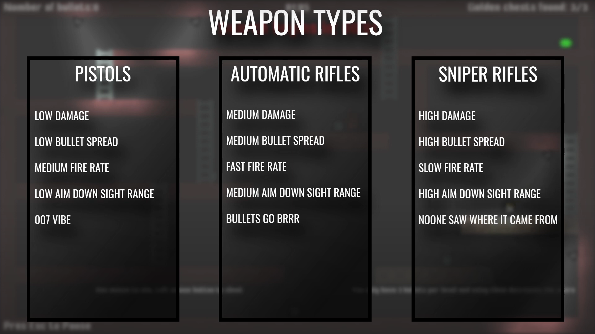
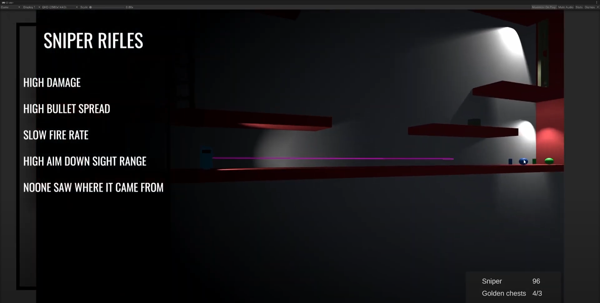

Light's Path Version 0.12 Update
21. jul. 2022
Guns reimagined
Guns reimagined - in terms of this game compared to the original of course. Not in any other way. In the original game you only had a pistol with a limited amount of ammunition and it was there to help you solve puzzles. You were penalised if you used them with points deduction since all of the levels were created in a way that you could solve them without the use of guns... you know, like in real life. I really like this concept and I'd like to keep it similar for the singleplayer part of the game. I decided to add more variety to the weapons, so you can choose the best one based on the scenario. This will go hand in hand with the multiplayer part of the game where these differences will have an even bigger impact on your playstyle.
Diverse feeling
I ended up with quite a big list of things I want to seperate each type of weapon. A big list for a solo developer of course. Based on the three different types of weapon the first one was clear - fire rate. This is the biggest visual difference (apart from models which do not exist yet) as you can clearly see how many bullets you've fired off. The second one is damage which rewards weapons with a slower fire rate. The third one was range, which was rather easy to implement, I just deleted the game object of the bullet after more time compared to the one with a shorter range.

The next thing I introduced was aiming down sight. Each weapon feels a lot different when aiming down sight and it's closely connected to the range of the weapon. My almost 2D style came in handy, as I was able to create quite a unique looking aim down sight mechanic. With that being said, you can also shoot without aiming down sight but then the bullets have a random offset. This is either bigger or smaller based on the weapon type. The last thing is recoil, which I haven't yet implemented so we'll talk about it in a future blog post.

Targets
One thing that adds a lot of depth in shooters is different damage depending on where you hit your target. I went with the classic head, body legs. Combine this with the different damages and everything else the weapons have I must say they do feel quite unique.
I've also continued my learning of 3D modeling, this time adding animation as well. I know this model is far from what I'll actually use, but I like the concept of characters looking kind of bulky not the right proportions. It's the kind of style I'd like to master so I can use in game, since photo realism is out of scope for me. Let me give you a sneak peak: